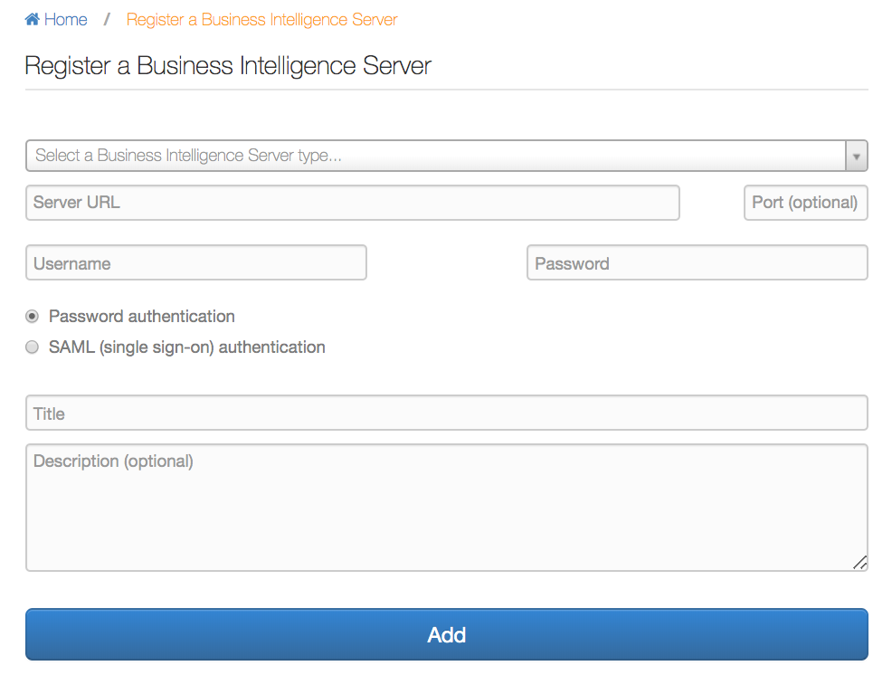
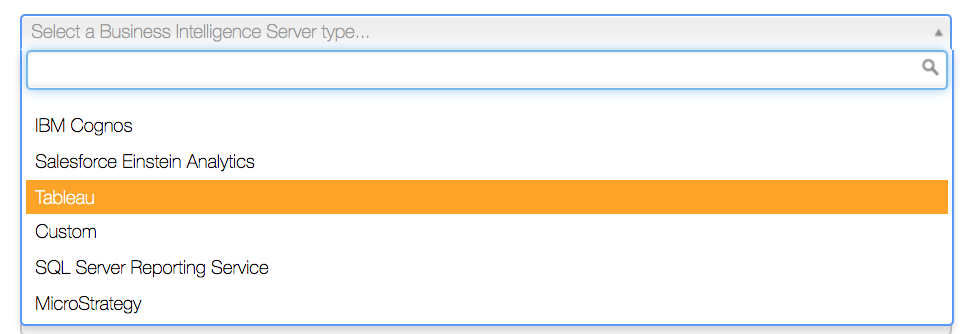
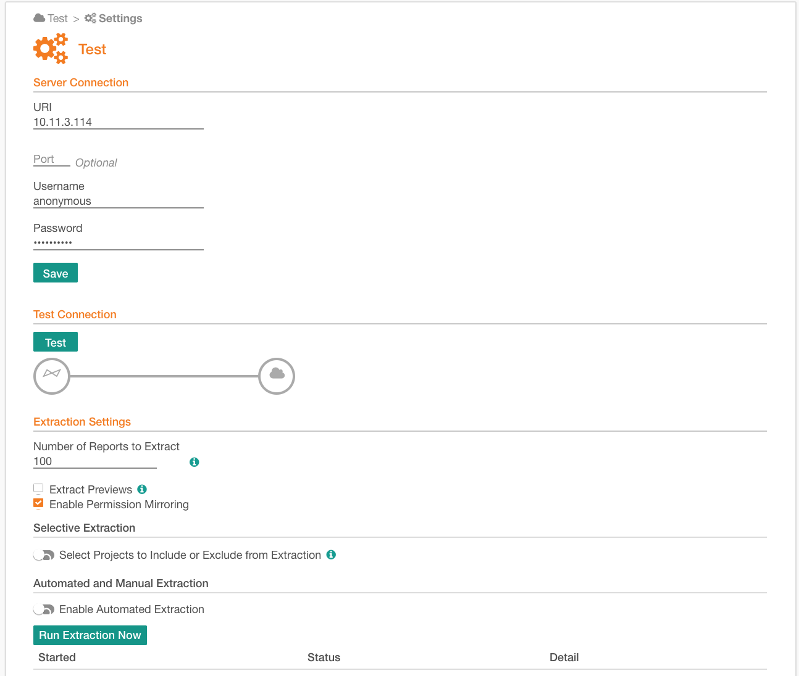

Add a BI Server as a Source¶
This section provides a general instruction for all BI server types. Adding sources to Alation requires the Server Admin role.
To add a BI server as a source:
Sign in to Alation as a Server Admin, and go to the Sources page:
Releases prior to 2020.3: click Sources on the main toolbar
2020.3 and later: click Apps on the top right and then Sources.
On the upper right, click Add+, and in the list that opens, click BI Server. The Register a Business Intelligence Server screen will open.
Note
Starting from 2020.3, the Register a BI Source screen only requires to select the type of the BI server and to specify a Title and Description. Connection parameters are specified on the Settings page.
From the BI server type list, select the server you are adding. Note that if a BI source type has dedicated feature flags, it will only be present in this list if you have enabled these flags.
Provide the connection parameters:
Server URL
Server port (optional): if the port is not provided, Alation uses the default port. The default port for secure server connections is 443. For insecure connections, Alation uses port 80 by default.
Username and password for the service account
Authentication type
Password authentication: This option is selected by default. Leave it selected. Alation only connects to BI servers using the service account credentials.
SAML (single sign-on) authentication: disregard this option and do not select it. It is not applicable to any of the BI sources.
Title: a title for this data source in the Alation Catalog.
Description (optional)
Click Add. The BI Server Settings page will open.

{kind=link}
{kind=link}
{kind=link}
The parameters on the BI source Settings page are grouped into several sections and depend on the BI server type you are adding. The groups of parameters are:
Server Connection: the values of parameters in this section will be in most cases passed here from the previous step. You can change the values and click Save to save the changes:
URI
Port
Username
Password
Test Connection click Test in this section to validate that connection can be established.
Extraction Settings use this section to specify parameters for metadata extraction. For specific parameters, see the dedicated section for each BI server type. For general information, see Extract BI Server Metadata.
Note
You can use the hints in UI for information on parameters and actions. The hints are behind the Info icon: hover over the Info icon next to a field to view the tooltip, as shown in this example.
{kind=link}